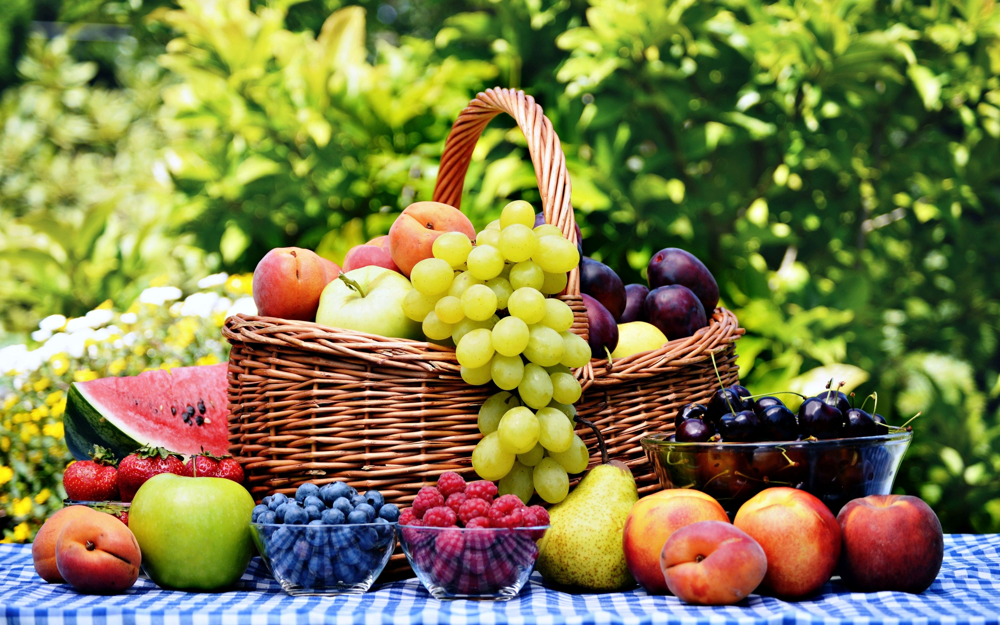
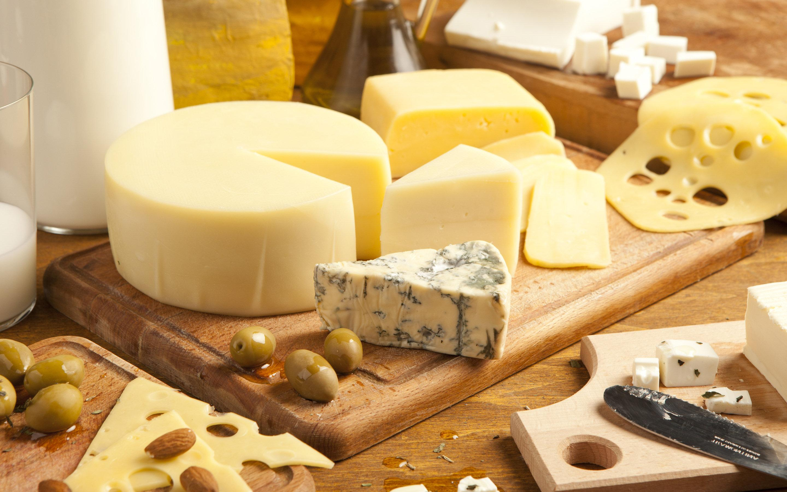
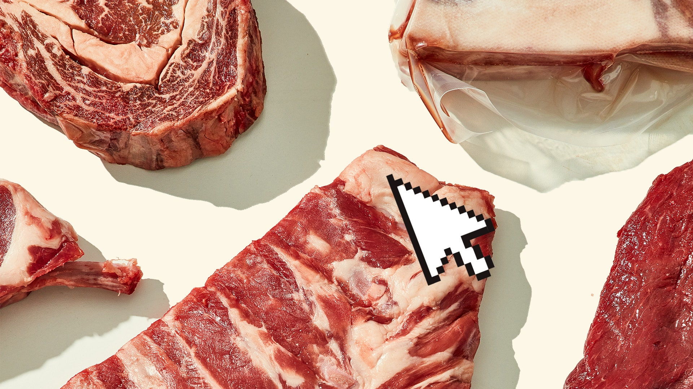

When it comes to the export of basmati rice, India is at the top of the world. The country is the largest producer as well as exporters of basmati rice. In the fiscal year 2019, India exported over USD 4.7 billion worth of basmati rice. The leading importers
of basmati rice include the middle-eastern countries of Iran, Saudi Arabia, Iran, UAE, Yemen, Kuwait, followed by the USA and the UK.
Non-Basmati Rice
Similar to basmati rice, the non-basmati rice exports valued at over a whopping USD 3 billion for exporting about 44,14,562 MT of non-basmati rice. Some of the leading imports of non-basmati rice include India’s neighbours Nepal, Bangladesh, as well as
other nations such as Benin, Senegal, etc.
Fresh Vegetables
India is among the top exporters when it comes to onions, ginger, okhra, and a number of other fresh vegetables. Keeping onion aside, in the year 2018-2019, India exported almost 7,20,559 MT of fresh vegetables, valued at over USD 270 Million. India is
the 3rd highest exporter of onions, exporting about 21,82,944 MT of onions in FY19. This trade alone was valued at over USD 495 Million. Some of the leading importers of fresh vegetables from India include the Asian countries of Malaysia,
UAE, Bangladesh, Saudi Arabia, as well as European giants Netherlands and the UK.
Groundnut
Another product which is exported quite a lot is groundnut (peanut). In the year 2018-19, India exported over 4,89,187 MT of the commodity. The trade was valued at over USD 430 Million. The countries that imported a large fraction of this includes Asian
countries of Indonesia, Malaysia, Philippines, Vietnam, etc.

Fresh Fruits
When it comes to grapes, India exported over 2,46,133 MT of it around the world in 2018-19. With major importers being Netherlands, Russia, and the UK, this trade brought in over USD 330 Million. India is a leading producer of mangoes, and as a result,
has exported over 46,510 MT of it in FY19. This USD 60 Million trade included countries such as UAE, UK, Oman, etc.For other fresh fruits export from India, such as bananas, pomegranate, etc, India exported over 3,72,213 MT of it in FY19.
Valued at over UsD 260 Million, UAE, Oman, Nepal, and Bangladesh were the leading importers.
Processed Fruits & Juices
When it comes to processed fruits and juices export from India, the export numbers have significantly increased from the previous years. India exported various kinds of processed fruits & juices of over 3,39,606 MT to countries such as Saudi, Netherlands,
UAE, UK, USA, etc in FY19. This is a significant increase compared to what was only a little over 2,64,784 MT in FY18.
Cereal Preparations
India is a leading exporter of cereal and other cereal preparations including biscuits, corn flakes, bread, etc. These cereal exports in 2018-19 year were over 3,47,752, which grossed to more than USD 550 Million. The countries that imported the most
cereal preparations include USA, Nepal, UAE, etc.
Guar gum
Also known as Dilip gum, guar gum export from India is among the most profiting ones. In fact, in the year 2018-19, India exported over 5,13,211 MT of guar gum leading to a trade worth over USD 670 Million. The countries importing the most included Norway,
China, Russia, and Germany.
Misc Processed Items
India also exports other processed food items such as masalas, tomato sauces, jiggery, etc. These products brought in over USD 338 million in the year 2016-17, and have been increasing ever since. The USA, Australia, Bangladesh, and Nepal are the top
importers of such products.
Alcoholic Beverages
Alcoholic beverages such as Rum, Wine, Whiskey, etc are exported to several countries around the globe. The alcoholic beverages export from India in 2018-19 was over 2,31,601 MT, and was valued at over USD 300 Million. Countries that imported the most
include UAE, Ghana, Nigeria, Singapore, Netherlands, etc.
Processed Vegetables
In recent years, the processed vegetables export from India has been focused more and more. In the FY19, over 2,48,122 MT of processed vegetables were exported, bringing over USD 350 Million to the country.

Dairy Products
Being the largest producer of dairy products, it is inevitable that dairy products are among the most exported food products from India. To give you a glance, the dairy products export from India in the fiscal year 2019 stands at over 1,13,725 MT, and
is valued at almost USD 345 Million. When it comes to dairy products, the countries importing the most include UAE, Nepal, Pakistan, Bhutan, etc.
Other Cereals
Apart from rice, India is a leading exporter of a number of other cereals as well. For wheat, the FY19 saw an export of over 2,26,225 MT, followed by Maize with over 10,51,277 MT. The gross exported quantity of other cereals such as jowar, bajra, etc
Pulses
India is the top producer of pulses in the world. This demand for pulses has seen the country export over 2,89,593 MT of pulses to countries such as Algeria, USA, UAE, etc. in FY19 This pulses export from India brought in over USD 260 Million to the country.
Cocoa Products
Cocoa is a popular beverage produced in south India. The overall cocoa export from India in 2018-19 is over 27,603 MT. This trade is worth over USD 193 million and sees countries such as the USA, Turkey, UAE, Indonesia, etc importing the most.

Sheep/Goat Meat
Sheep and goat meat export from India is majorly to countries such as UAE, Saudi, Qatar, Kuwait, Oman, Maldives, etc. The total goat/sheep meat export from India in 2018-19 weighed over 18,425 MT, and brought in over USD 110 Million.
Milled Products
Milled products include the flours of wheat, rice, maize, etc. India is among the leading producers of various types of flour. The flour export from India in the FY19 stood at over 3,07,367 MT, and brought in approximately USD 151 Million. The countries
that imported these the most include USA, UAE, Australia, etc.
Floriculture
Floriculture includes different types of flowers. The overall floriculture export from India in 2018-19 stands at over 19,726 MT, bringing in about USD 81 million. The major importers of these include USA, and European countries such as the UK, Germany,
Netherlands, etc.
Wheat
India is one of the leading producers of wheat. Mainly produced in North India, the wheat export from India in the year 2018-19 was over 2,26,225 MT and was valued at about USD 60 million. The major wheat importing countries include Nepal, Bangladesh,
UAE, Somalia, etc.